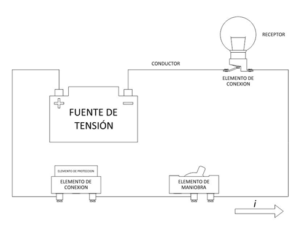
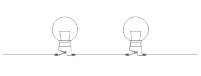
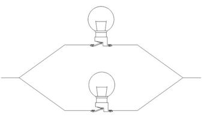

Unidad 5
CIRCUITOS ELÉCTRICOS
Se denomina circuito eléctrico a la trayectoria cerrada que recorre la corriente eléctrica.
Elementos que podemos encontrar en un circuito eléctrico
-
Fuente de tensión: genera una diferencia de potencial o tensión entre sus terminales, logrando que los electrones (libres) se desplacen por el circuito.
Ejemplos: baterías, pilas, dinamos, paneles solares, etc.
-
Conductores: llevan la corriente eléctrica a los demás componentes del circuito.
Ejemplos: cables, alambres, etc.
-
Receptores: transforman la energía eléctrica que recibe en otro tipo de energía.
Ejemplos: motor eléctrico, estufa eléctrica, altavoz, lámpara, etc.
-
Elementos de maniobra: llamados también interruptores, permiten o impiden el paso de la corriente eléctrica a través del circuito.
Ejemplos: Interruptor unipolar, Interruptor bipolar, Interruptor de conmutación, Pulsador, etc.
-
Elementos de conexión: permiten conectar un artefacto eléctrico al circuito de una manera fácil y segura.
Ejemplos: portalámparas, ficha macho, ficha hembra o tomacorriente, porta fusible, etc.
-
Elementos de protección: Protegen a las personas y a la instalación ante fallos o accidentes que puedan producirse en el circuito eléctrico.
Ejemplos: fusibles, Interruptor diferencial, interruptor termo magnético, jabalina.

Tipos conexión
Dependiendo de la manera que se conecten los componentes de un circuito,
estos pueden estar en conectados, en serie, en paralelo y de manera mixta,
que es una combinación de estos dos últimos.
Conexión en serie

Características
-
Los elementos están conectados de modo que la corriente
eléctrica circula por un solo camino.
-
El valor de la corriente es el mismo para cada elemento.
-
Si se corta el paso de la corriente en cualquier punto del circuito,
se interrumpe la conducción de la corriente eléctrica.
Conexión en paralelo

Características
-
Los elementos están conectados de forma que se presenta más de un
camino para el paso de la corriente eléctrica.
-
Todos los elementos comparten la misma tensión.
-
Cada elemento es independiente del otro,
puede desconectarse del circuito sin por ello afectar al resto.